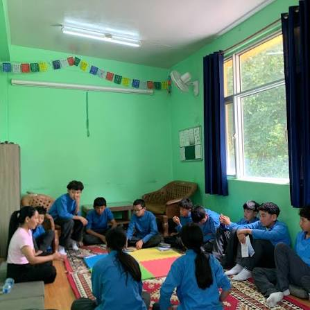

Access to quality education for refugee and minority children depends not only on school enrollment but also on material resources, youth agency, and recognition in digital governance systems. The research below sheds light on how resource parity, youth-led models, and identity documentation shape participation and long‑term inclusion.
[1] Executive Summary: Material Resource Parity and Refugee Educational Outcomes
Refugee students frequently attend schools with lower levels of resources, safety and social inclusion than non‑refugee peers, even when teachers report higher preparedness for multicultural education. In such under-resourced contexts, educators struggle between equal per‑capita distribution and equity-focused allocation that targets refugee needs. Where funding is higher, resources are more often redistributed based on need, supporting more equitable outcomes for refugee learners. Broader evidence shows that high-quality, inclusive education in refugee settings protects cognitive, emotional and social development and supports long‑term self‑reliance. While the abstracts here do not quantify the independent effect of core learning materials, they repeatedly show that material conditions, institutional discrimination and digital inequalities jointly shape refugee youths’ ability to convert educational access into real attainment.
Educational Barriers and Resource Conditions
- Refugee youth often confront lower-quality provision, exclusion and discrimination in camp and host‑country systems, undermining the protective role of education.
- Inequalities are not only about access, but about capacity to use resources, influenced by early disadvantage, limited navigational capital and racialized stereotypes.
- Digitally mediated learning and services can amplify existing inequalities when connectivity, devices or literacy are lacking.
[2] Literature Review: Evidence on ‘Youth‑Leading‑Youth’ Models
Youth participatory approaches, including Youth‑Led Participatory Action Research (YPAR), youth organizing, youth‑led planning and participatory arts, show consistent benefits for youth development and community change.
Forms and Effects of Youth Leadership
- YPAR and youth organizing promote social justice goals while enhancing youths’ critical consciousness, civic trajectories and capacity to shape school and community policies.
- Integrative reviews find that youth participatory approaches contribute to empowerment, health equity, and influence on social determinants of wellbeing, including education and local environments.
- Case studies in schools show that youth-generated evidence can influence adult decision‑makers when structures exist to receive, deliberate on, and act on youth findings.
- Participatory and arts-based approaches with migrant and refugee youth (e.g., digital storytelling) support autonomous learning, identity affirmation, and agency, expanding spaces for their voices within curricula.
- Research on secondary‑school youth leadership in Colombia indicates that meaningful youth roles in community projects support personal, social and academic development, provided structural barriers and teacher capacities are addressed.
- Collectively, these findings support youth‑leading‑youth and co‑leadership models as effective mechanisms for inclusion, particularly when paired with adult allies and institutional change levers.
Examples of Youth‑Centred Digital and Community Initiatives

[3] The Role of Documentation and Digital Governance
Legal Identity, Statelessness and Exclusion
Efforts to provide “legal identity for all” through civil registration and digital ID can both support and undermine stateless and displaced minorities. Birth registration and identity documents are essential for claiming rights, including education, but definitional ambiguities and cross‑border recognition problems mean that new systems do not automatically resolve statelessness.
Studies on digital identity in Cambodia and Malaysia highlight that:
- Digital identification simultaneously produces knowledge and “non‑knowledge”, ambiguity and uncertainty, about stateless populations, potentially foreclosing avenues for resistance.
- Digitised birth registration and refugee tracking systems can increase risks of exclusion and surveillance when underlying legal frameworks and protections are weak.
- For undocumented groups such as ethnic Vietnamese in Cambodia or Rohingya in Malaysia, digital systems may shift them from international protection to national surveillance regimes, changing their effective status without guaranteeing rights.
- At the same time, biometric and introducer‑based onboarding frameworks demonstrate that technical standards and governance choices determine whether remote registration supports inclusion for nomadic, displaced and stateless populations, or reinforces “borderline” citizenship.
Implications for De Facto Disenfranchisement
- Where digital birth registration and ID systems are not designed with inequality assessments and community facilitation hubs, hard‑to‑reach and undocumented populations remain unregistered, perpetuating de facto disenfranchisement in access to schooling and social services.
- UN and human‑rights bodies stress that the right to birth registration for migrant and street‑connected children is central to accessing protection and services, including education.
- Transparent, rights‑based documentation systems, anchored in non‑discrimination and cross‑border recognition, are therefore critical to reducing structural exclusion of stateless minorities from educational guarantees.
[4] Impact Metrics: Material Resources, Digital Access and Retention
The abstracts do not isolate notebooks and pens as a single variable, but they collectively show that material and digital resource environments shape refugee participation, persistence and outcomes.
School and System-Level Resource Effects
- International survey data from 41 countries indicate that schools serving refugee students have lower general resources and perceived safety, conditions associated in broader education research with weaker student engagement and retention.
- In Australia, schools with higher funding reallocate resources based on need, enabling more targeted support for refugee students and narrowing disparities, whereas under‑resourced schools often revert to equal (rather than equitable) distribution, limiting the impact of interventions.
- In Kenyan refugee camps, vocational interventions face contextual constraints and discrimination that compromise implementation quality, highlighting that even when programs exist, inadequate materials, facilities and teacher compensation undermine long‑term educational pathways.
Digital Conditions and Participation
- Refugee youth’s educational participation in digitised settings depends on distributed practices across school, welfare and informal contexts, with digital artefacts mediating information access and knowledge building. Lockdowns revealed and deepened inequalities where devices, bandwidth and support were lacking.
- Minimal‑computing approaches in Ugandan refugee higher‑education bridging programs show that technology works best as a facilitator of contact, care and psychosocially supportive pedagogy, rather than as a stand‑alone solution.
Learning Materials as Part of Broader Capability Sets
- Qualitative work on African refugee youth in Australia shows that educational inequality involves conversion factors, early disadvantage, limited information, and discrimination, that determine whether material inputs translate into attainment. Evidence from refugee camps and diaspora communities further indicates that access to locally and globally situated supports, including materials, psychosocial support and digital connections, enables persistence in school despite displacement.
Taken together, these findings support a policy inference that core learning materials, safe environments and digital access are mutually reinforcing prerequisites for long‑term retention, especially when combined with youth‑led structures that strengthen agency.
[5] Policy Recommendations for the European Commission and UN OHCHR
-
Embed Equity‑Based Resource Allocation in the European Child Guarantee (ECG)
Require Member States to assess and publicly report on disparities in school‑level resources, safety and inclusion for refugee/minority children, and to redistribute funding and materials based on need, not just headcount.
-
Institutionalise Youth‑Led Governance in Refugee and Minority Education
Support YPAR, youth councils and participatory arts/digital storytelling as formal advisory mechanisms to schools and local authorities, with clear mandates for using youth-generated evidence in ECG implementation and OHCHR monitoring.
-
Design Rights‑Safeguarding Digital Identity and Registration Systems
Align EU and UN guidance on digital ID with safeguards against statelessness and surveillance, ensuring: (a) non‑discriminatory access to birth registration and school enrollment regardless of status; (b) interoperability and cross‑border recognition; and (c) independent oversight and community “introducer” roles to prevent exclusion.
-
Guarantee Material and Digital Learning Parity for Displaced Youth
Treat provision of core learning materials and minimum digital access (devices, connectivity, literacy support) as justiciable components of the right to education for all children in need, including those in reception centres and informal settlements.
-
Integrate Psychosocial and Anti‑Discrimination Mandates into Educational Interventions
Require all ECG and UN‑supported interventions for displaced and minority youth to include anti‑discrimination measures, psychosocial support and teacher capacity‑building, recognising that discrimination and trauma undermine the impact of material and digital investments on retention.
[6] Conclusion
Evidence across diverse contexts indicates that refugee and minority youths’ educational trajectories hinge on three interlocking domains: equitable material resources, meaningful youth leadership, and inclusive documentation/digital governance frameworks. When schools and systems combine resource parity with youth‑led participation and rights‑based identity systems, displaced children are better able to remain in education, develop capabilities and exercise their rights. Strengthening the European Child Guarantee and UN human‑rights mechanisms around these pillars would directly address entrenched disparities for Europe’s most marginalised young learners.